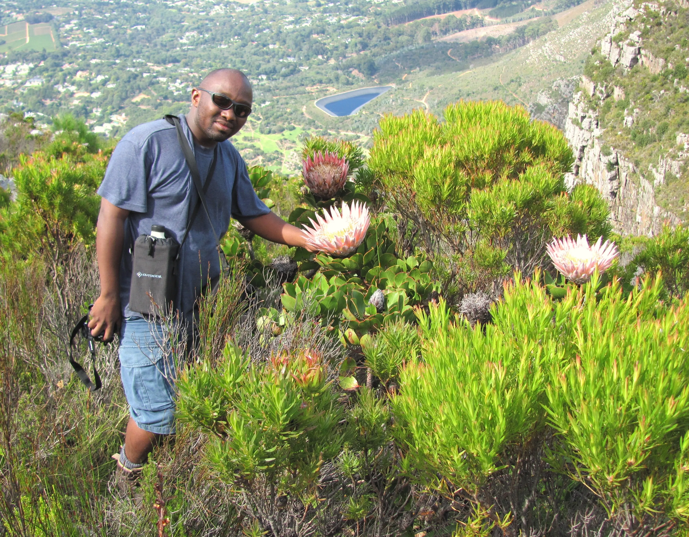

Every small town in the Western Cape, within reach of a trained pair of hands.
Over the next decade we aim to build a network of more than 300 Bowen practitioners, serving over 150 small towns and communities.
How the first cohort works
Our inaugural cohort began in 2025: six women taking part in a year-long apprenticeship. One module runs each month from February to November, covering the first seven courses required for formal qualification as a Bowen practitioner, plus two supporting courses — anatomy, and an accredited first aid course.
Training is supervised throughout by Bowen SA (the Bowen Therapy Association of South Africa), and participants apply what they're learning immediately, under an experienced trainer, at our existing sites in Atlantis and Kewtown.

The next ten years
First cohort begins
Six women start the year-long apprenticeship, one module a month, at our Atlantis and Kewtown sites.
Qualify and place the first practitioners
Placeholder — add specific milestones
Add real targets here as they're set: number of graduating cohorts, new sites opened, or towns added.
Scale the network
Placeholder — add specific milestones
This is where a regional rollout plan, funding milestones, or new partner organisations would sit.
300+ practitioners, 150+ towns
The goal we're building toward: a self-sustaining network of Bowen practitioners across every small town in the Western Cape.